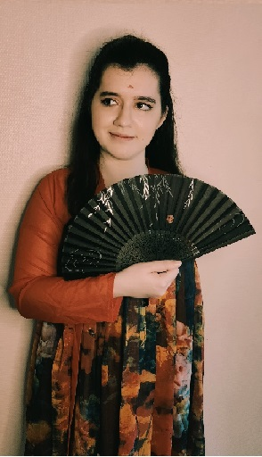

Cathelène Dechesne
Hi everyone! My name is Cathelène, I live in Canberra, ACT, Australia with my wonderful husband.
I'm a French lady, originally from the south-west of France, so I've been arround mountains, rivers, and green grass most of my life.
My main hobbies are in art, music, traveling and good food(especially Asian and French food)! I also love crochet and origami.
I served a mission in Temple Square, Salt Lake City, Utah about 8 years ago, and what I loved most about my mission
was to talk to people from different parts of the world, getting to know their background(culture, religions, etc...),
how much we have in common, and of course sharing the gospel to them when it felt right to do so.
I've graduated from Pathway in April 2023 and I am currently into a Profetional Study Degree.
After completing the "Web & Computer Programming" certificate, I'll start "Graphic Design Fundamentals"
and then finish with "Web Development". My goal is to learn and get qualifications in programming and in art
(adding to ones already have in the art field) so I can combine the two profetionnally, or make a living in the first one
and having the second one to support.
I am really excited about learning with you guys! I am a complete beginer in the programming field, but if I can help at all I am happy to do so!